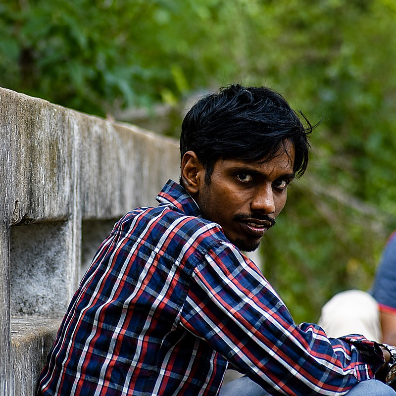

Periasamy Sakthidhasan, Ph.D.
I integrate artificial intelligence, bioinformatics, molecular modelling and experimental biology to accelerate therapeutic discovery — spanning computational drug discovery, structural bioinformatics, molecular dynamics simulation and natural product pharmacology, with a particular focus on snakebite therapeutics, cancer biology and next-generation vaccine design.

Kanniyakumari, Tamil Nadu, India
Bridging the wet lab and the algorithm
I am Dr. Periasamy Sakthidhasan, a computational biologist and biotechnology researcher with a Ph.D. in Plant Biotechnology from Bharathidasan University, Tamil Nadu, India. My work sits at the intersection of traditional wet-lab molecular biology and modern computational methods — from isolating and purifying macromolecules on the bench, to building machine-learning pipelines that screen natural products for drug discovery.
My research focuses on integrating tissue culture, AI/ML, bioinformatics and molecular biology to analyse genomic, transcriptomic and proteomic data for disease research and therapeutic discovery. I apply computational pipelines and predictive modelling to identify genetic variations and therapeutic targets, with a strong interest in precision medicine and oncology.
Throughout my academic and professional journey, I've worked to bridge traditional botanical studies with modern biotechnological applications — from DNA, RNA and protein analysis for mutation detection, to structure-based drug design and AI-assisted screening against emerging targets.
Current position
Project Associate, Department of Nanotechnology, Noorul Islam Centre for Higher Education (NICHE), Kanniyakumari — working on a DST-funded project on the scientific validation of traditional phytomedicines used by tribal populations in Tamil Nadu for snakebite management.
Since Aug 2024 · DST, Ministry of Science & Technology, IndiaWhere I spend my research energy
Six threads run through my work — each one connecting computational prediction back to a bench-verified result.
AI/ML Drug Discovery
QSAR modelling, graph neural networks and docking pipelines to reveal natural-product inhibitors against difficult targets.
Structural Bioinformatics
Molecular docking, molecular dynamics simulation and ADMET profiling for structure-based drug design.
Snakebite Therapeutics
Ethnomedicinal and phytochemical strategies as complementary antivenom therapies for tissue and organ toxicity.
Cancer Biology
Isolation and cytotoxic assessment of bioactive plant proteins against human cancer cell lines, in vitro and in vivo.
Precision Medicine
Genomic, transcriptomic and proteomic data analysis to identify genetic variation and therapeutic targets.
Phylogenetics & Taxonomy
ITS phylogeny and RAPD-based genetic relationship studies to resolve taxonomic disputes in plant species.
Experience
Project Associate
Engaged in a DST-funded research project on the scientific validation of traditional phytomedicines used by tribal populations in Tamil Nadu for snakebite management, combining computational and experimental approaches.
Laboratory Technical Assistant
Handled and operated advanced analytical instruments including HPLC, HPTLC, LC-MS/MS, FTIR and qRT-PCR in support of departmental research.
Project Fellow
Conducted field and lab research under the Tamil Nadu Greening Project; managed and analysed large plant survey datasets and presented findings at national and international conferences.
Academic background
Ph.D., Plant Biotechnology
Centre for Research and Development of Siddha & Ayurveda Medicines, Department of Botany, School of Life Sciences.
"Phylogenetic analysis and anticancer activity of Mallotus philippensis"
M.Sc., Plant Biotechnology
Coursework across genetics and molecular biology.
"RAPD for identification and estimation of genetic relationship of Impatiens species in Tamil Nadu"
B.Sc., Biotechnology
Foundational training across biology, chemistry and core biotechnology methods.
Featured projects

Phylogenetic analysis & anticancer activity of Mallotus philippensis
Resolved taxonomic disputes through phylogenetic relationship analysis across Mallotus species; ran phytochemical screening and GC-MS analysis of leaf extracts; isolated and purified seed proteins via size-exclusion chromatography and LC-MS/MS, then assessed cytotoxicity against three human cancer cell lines and in a mouse model.

Traditional phytomedicines for snakebite management
Scientific validation of tribal ethnomedicinal knowledge for treating snakebite envenomation in Tamil Nadu, combining phytochemical screening, machine-learning-integrated analysis and chick-embryo CAM validation against venom-induced proteolysis and vascular damage.
Genetic evaluation using RAPD markers
RAPD-based identification and estimation of genetic relationships among Impatiens species across Tamil Nadu.
NetPharma & MD Automation
An integrated computational platform automating network pharmacology, molecular docking and molecular dynamics simulation workflows — enabling high-throughput, reproducible, publication-ready outputs for drug discovery research.
Journal Articles
Under Review
Conference Proceedings
Analytical instrumentation
Years operating and troubleshooting the instruments behind the data — from chromatography to imaging.

High Performance Liquid Chromatography
Waters HPLC system with 2545 Quaternary Gradient Module and 2998 Photodiode Array Detector with fraction collector II, powered by Empower II software.

Confocal Laser Scanning Microscopy
Zeiss LSM 710 workstation — sample image shown is Drosera burmannii pollen stained with fluorescein diacetate.

Liquid Chromatography Mass Spectrometry
Thermo Scientific LTQ XL Ion Trap (HESI & APCI) mass spectrometer with UHPLC system.

Real-Time PCR
Applied Biosystems™ 7500 Real-Time high-speed thermal cycling system, StepOne software v2.x.

Fourier Transform Infrared Spectroscopy
PerkinElmer Spectrum Two FT-IR spectrometer with Spectrum 10 software.

Fluorescence Imaging
Confocal sample capture — part of ongoing microscopy work on plant and cellular structures.
Technical & professional toolkit
Technical Skills
Soft Skills
IT & Languages
- IT: MS Office (extensive), Linux basics, Python & R for statistical analysis
- Languages: English (professional), Tamil (mother tongue)
Teaching
- Supervised and taught practical classes for M.Sc. students, adapting to different scientific levels and backgrounds while stimulating discussion.
Workshops & training
Nexus Bio-AI/ML: Finding the AI/ML Match for Your Bio-Research
Two-day workshop, Institute of Bioinformatics and Applied Biotechnology (IBAB), Bengaluru.
2nd Workshop on Mass Spectrometry Data Analysis using Open-Source Tools
NCBS, Bangalore — LC-MS and GC-MS data analysis using MS-DIAL and MetaboAnalyst; preprocessing, peak alignment, proteomic and metabolomic interpretation.
4th Hands-on Training: Computational Tools for Drug Discovery
Dept. of Chemistry, Gujarat University, Ahmedabad — molecular docking, molecular dynamics and virtual screening using Schrödinger Maestro and Desmond.
Awards & honors
Best Oral Presentation Award
National Seminar on Recent Advances in Antiviral Drug Design, Discovery & Development — Cherraan's College of Pharmacy, Coimbatore, June 2018.
Best Poster Award
National Seminar on Recent Advances in Antiviral Drug Design and Discovery — Kalasalingam University, Krishnankoil, October 2017.
Best Poster Award
National Seminar on Recent Advances in HIV/AIDS Drug Discovery and Development — Kalasalingam University, Krishnankoil, December 2016.
Teaching & outreach
Structure-Based Drug Design — Guest Lecture
Delivered at the "Next-Gen AyurTech Bootcamp," NICHE in collaboration with the Government Ayurveda Medical College and Hospital, Nagercoil, 20–21 January 2026.
Testimonials
"Dr. Sakthidhasan's expertise in molecular techniques and his dedication to research excellence are truly commendable. His work in phytochemical analysis has significantly advanced our understanding of plant bioactive compounds."
"Proficiency with advanced analytical instruments like HPLC, HPTLC, spectroscopy and qRT-PCR has been invaluable in our laboratory. His meticulous approach and problem-solving skills set him apart."
"Leadership and organizational skills during our collaborative work were outstanding. He consistently delivered high-quality outcomes and fostered a productive research environment."
Let's collaborate
Open to postdoctoral opportunities, research collaborations, and conversations about computational drug discovery, bioinformatics or phytomedicine research.
- biosakthi88@gmail.com
- +91 79044 84318
- Kanniyakumari, Tamil Nadu, India